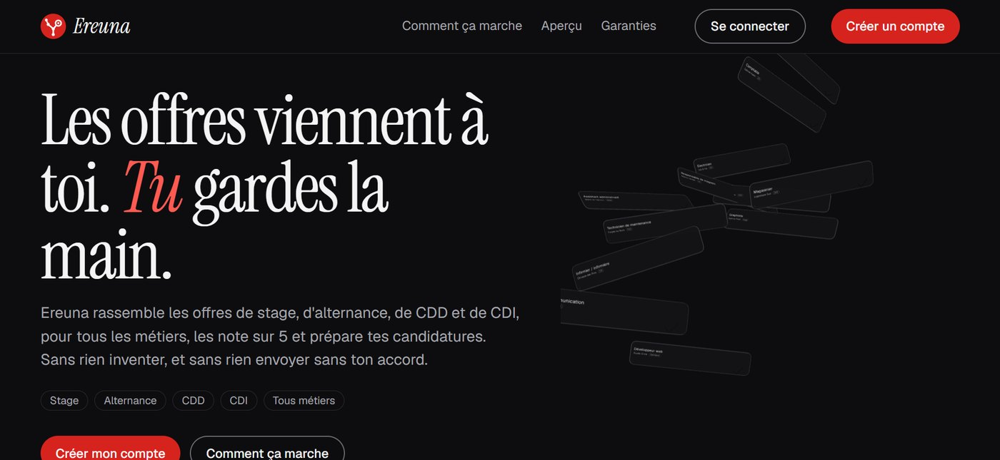
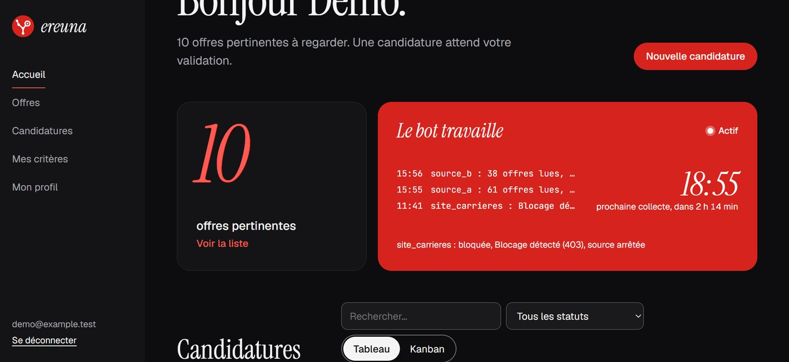

Projet personnel · depuis septembre 2026 · en cours
Ereuna, mon assistant de recherche d'alternance
Une application qui va chercher les offres de stage et d'alternance, les classe selon mon profil et m'aide à préparer chaque candidature. Elle n'invente rien et n'envoie rien sans mon accord.
Conçue avec des agents IA, de la collecte des offres jusqu'à l'interface.